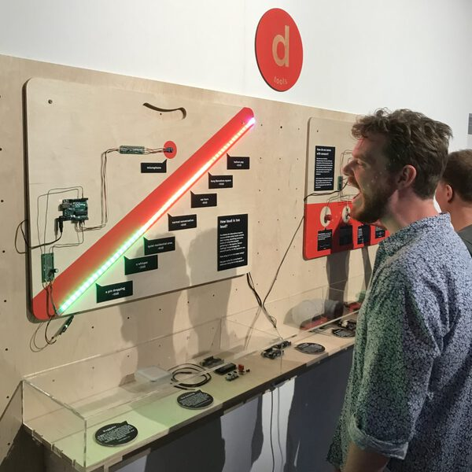
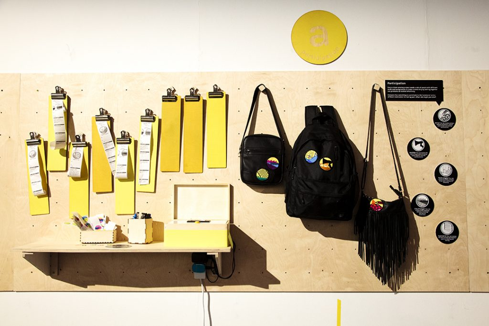
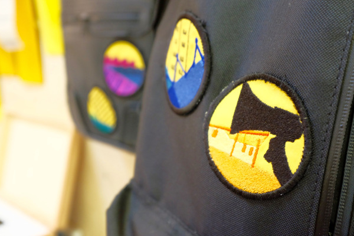

Commons Sense was a citizen sensing exhibition at Knowle West Media Centre, which explored the contexts and tools for citizen led sensing. I worked in collaboration with Pete Bennett and KWMC to design the interactive space, and the exhibition ran from May until November 2018.

The show explored citizen sensing through documentiong sensors, community activisim, and data. We asked questions around how data is collected, and how data could be used as a commons.



We invited people to explore ideas of data commons through a range of interactive exhibits, artworks, and activities. People were invited take part through role-play. They found out, visualised, and collected data based on a randomly assigned roles – giving them the opportunity to explore different perspectives. We also added multiple-modes of interaction, making the data feel tangible.